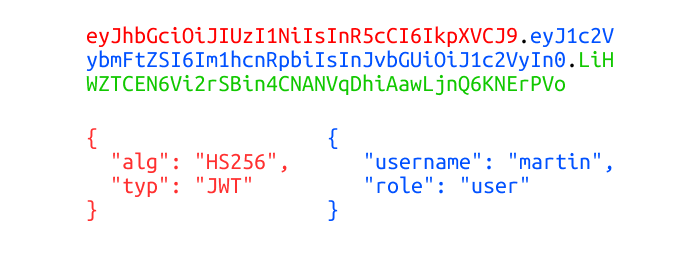
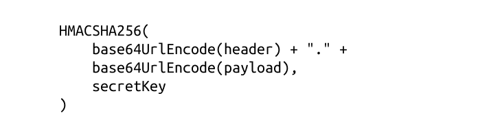
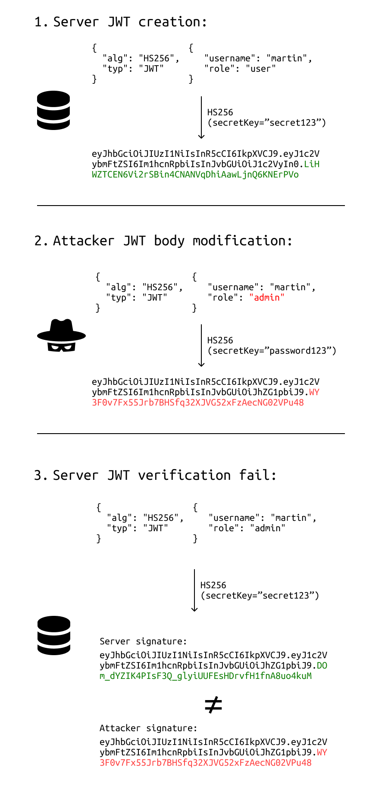
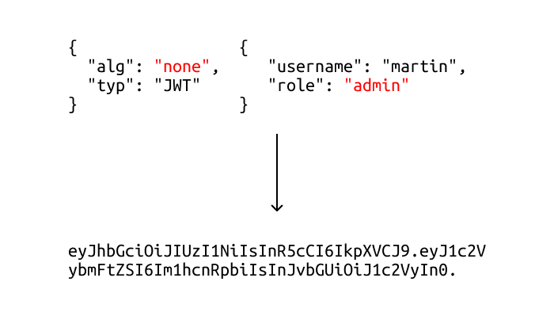
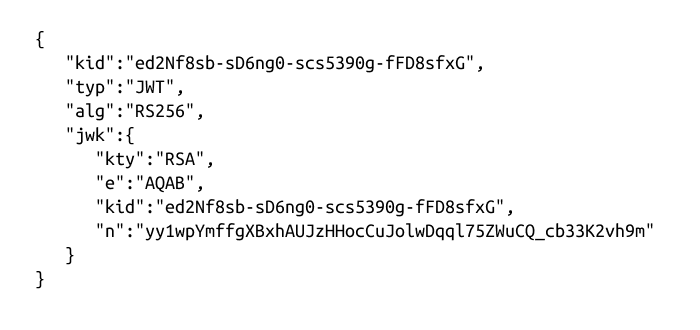
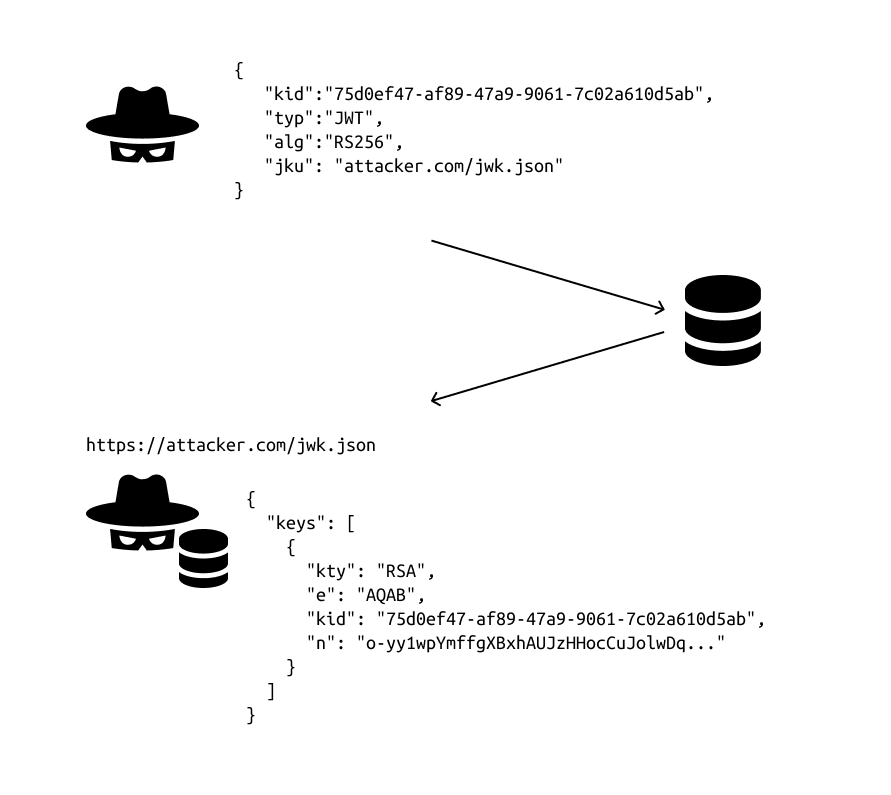
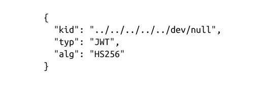

JSON web token is a standardized format for exchanging signed JSON data between 2 parties. In context of web applications, they are used for authentication, session handling and access control mechanisms.
Unlike other session tokens, JWTs are fully stored on the client side. Server doesn't have to store any user data contained in the JWT.
JWT consists of 3 parts - header, payload and signature.
Header contains information about which algorithm will be used for signing the JWT.
Body is used for including data for web application, it can contain basically anything.
Signature part is checked by server to validate the JWT. I will explain this process more deeply later.

As you have probably realized, data is encoded using Base64 and all parts are divided by dot.
You already know that JWTs are fully stored on the client side, but how can the server be sure that none of the data in the payload was modified by the user?
This is done by verifying the JWT using a signing algorithm. There are 2 most used signing algorithms in the world of JWTs - HS256 and RS256.
In HS256 server uses 1 secret key for both creating the JWT and verifying it.
Signing process can be described like this:

If user modifies any data in header or body, it must be signed using a correct secret key to create valid signature. User cannot do that, since only server knows the secret key.

There are 2 keys used in RS256, public and private key. Private one is used for JWT creation and public one for verification.
Since private key is kept in secret on server, user cannot create valid signature for JWT with modified data.
Attacks involves sending modified JWT content to web application server. The main goal is usually to impersonate other users of the application.
Note: You can try all the coming JWT attacks using PortSwigger academy labs. I will leave a link to the lab at the end of every attack explanation.
If server doesn't correctly verify the JWT coming from user, nothing stops malicious attacker to modify any data in JWT body.
Attacker can sign the JWT with any secret key, verification will be always successful in this case.
In every JWT header, the "alg" parameter must be specified. This parameter tells which signing algorithm is used for creating the signature part.
If you set the alg parameter to "none" server won't verify the signature. In correct scenario, the server should reject these tokens with no signature, but that's not always the case.
When sending the JWT to server, you can leave the signature part empty, but a trailing dot must be provided.

In HS256 simple string is used as the secret key. If the secret key is not long enough or predictable, it can be cracked using dictionary attack or brute-forcing attack.
Attacker takes the header and body part, then simply runs it trough the signing algorithm with different secret keys. If any of the final signatures matches with the original signature from the server, correct key has been found.
Since all the cracking happens locally on attacker's machine, there are no web app rate limits that could stop him.
You can use hashcat to crack the the key using command: hashcat -a 0 <jwt> <wordlist>
There is another optional parameter in JWT - "jwk". This parameter allows the server to embed their own public key to JWT itself.
Server should always use only limited whitelist of public keys to verify JWT signatures.
If whitelist isn't configured, attacker can embed his own RSA public key in the jwk parameter and sign the modified token with his private key.

"kid" parameters must match, otherwise server would still use its own public key for verification.
Using "jku" parameter, server can set URL address to fetch JWK keys from.
Server should always be able to fetch keys only from trusted domains, if that's not the case attacker can inject own URL address to jku parameter.
JWT is then verified the same way as in the previous attack.

So far, you have used "kid" parameter to point the server to use your injected keys.
In some cases, this parameter can be configured to point to a particular entry in a database, or even the name of a file.
If the parameter is vulnerable to path traversal, attacker can point the server to use file from its file system as the verification key.
The simplest approach is to use /dev/null file, because it's an empty file, reading it returns an empty string. Signing the token with empty string will result in a valid signature.

JWT is a very popular and powerful way to perform authentication in modern web applications. Also, there are many security pitfalls, which can lead to critical vulnerabilities. Developers should always use the latest versions of battle tested 3rd party libraries for implementing JWT.
Thank you for reading, I hope you have learned some new things about this topic 🐱💻